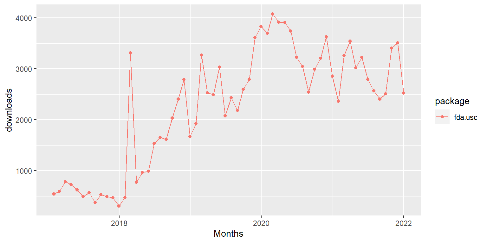

Functional Data Analysis using fda.usc and fda.clust packages
December, 2024
Introduction
This vignette describes the usage of fda.usc in R. fda.usc package carries out exploratory and descriptive analysis of functional data exploring its most important features such as:
- Functional Data Representation
- Functional Regression
- Functional Supervised Classification
- Functional Clustering
- Functional ANOVA
- Feature and Variable Selection
The colaborator of fda.usc is Manuel Febrero-Bande, the contributors are Pedro Galeano (UC3M), Alicia Nieto (UNICAN) and Eduardo Garcia-Portugues (UC3M).
The coauthor of fda.clust is Prof. Manuel Febrero-Bande, the contributors is **Rikelvi Gonzalez (former master’s student, UDC)*.
CRAN Task View
R task view devoted to FDA: https://cran.r-project.org/web/views/FunctionalData.html
is included in the set of the 7 recommended core packages.
- Version: 2.2.0
- Depends: R (≥ 3.5.0), fda, splines, MASS, mgcv, knitr
- Imports: methods, grDevices, graphics, utils, stats, nlme, doParallel, parallel, iterators, foreach, kSamples
- Suggests: rmarkdown+ Reverse imports: biosensors.usc, etree, FADPclust, FiSh, funcharts, FuncNN, goffda, GPFDA, logitFD, longsurr, mlmts, puls, robflreg, slasso, SpatFD
- Reverse suggests: GET, mlr, photobiologyInOut
- Versions (by year): 5 (2012), 6 (2013), 2 (2014), 1 (2015), 2 (2016), 1 (2018), 2(2019), 1(2020), 1(2022), 1(2024)
fda.usc package download by month:

Functional Data Analysis in R
fda It is a basic reference to work in R with functional data, see (Ramsay and Silverman 2005a), http://ego.psych.mcgill.ca/misc/fda/
(Frédéric Ferraty and Vieu 2006) processed FD from a nonparametric point of view (normed or semi–normed functional spaces). These authors are part of the French group STAPH maintaining the page http://www.lsp.ups-tlse.fr/staph/
Core packages:
- FDboost: Boosting Functional Regression Models
- fds: Functional Data Sets
- ftsa: Functional Time Series Analysis
- fdasrvf: Elastic Functional Data Analysis
- refund: Regression with Functional Data
- fdapace: Functional Data Analysis and Empirical Dynamics
4.Interactive tools:
+ StatFda: exploratory analysis and functional regression models,http://www.statfda.com forand refund.shiny packagefor interactive plotting.
refund.shiny: Interactive Plotting for Functional Data Analyses
tidyfun: makes data wrangling and exploratory analysis of functional data easier, https://fabian-s.github.io/tidyfun
- Other packages:
- GPFDA: Use Functional regression as the mean structure and Gaussian Process as the covariance structure.
- MFHD: Multivariate Functional Halfspace Depth
- rainbow: Bagplots, Boxplots and Rainbow Plots for Functional Data
- NITPicker: Finds the Best Subset of Points to Sample
- fdatest: Interval Testing Procedure for Functional Data
- fdakma: Functional Data Analysis: K-Mean Alignment
- fdaMixed: Functional data analysis in a mixed model framework
- geofd: Spatial Prediction for Function Value Data
- goffda: Goodness-of-Fit Tests for Functional Data
- mlr: Machine Learning in R
Information to be updated
Installation
Like many other R packages, the simplest way to obtain fda.usc is to install it directly from CRAN. Type the following command in R console:
Users may change the repos options depending on their locations and preferences. Other options such as the directories where to install the packages can be altered in the command. For more details, see help(install.packages).
Here the R package has been downloaded and installed to the default directories.
Alternatively, users can download the package source at http://cran.r-project.org/web/packages/fda.usc/index.html and type Unix commands to install it to the desired location.
Quick Start
The purpose of this section is to give users a general sense of the package, including the components, what they do and some basic usage. We will briefly go over the main functions, see the basic operations and have a look at the outputs. Users may have a better idea after this section what functions are available, which one to choose, or at least where to seek help. More details are given in later sections.
First, we load the fda.usc package: